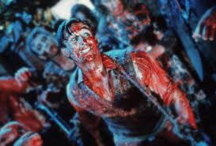
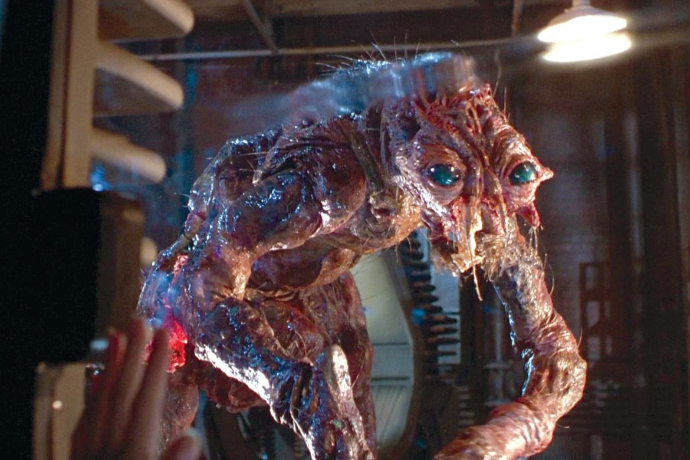

Fome Animal (Braindead)

Filme clássico cult do início da carreira de Peter Jackson, onde um rapaz bem intencionado que vive
com a mãe, acaba se envolvendo com uma moça mexicana ao mesmo tempo que sua mãe se torna um zumbi
que infectou toda a cidade.
Página do filme na Wikipedia
A Mosca (The Fly)

Um cientista renomado inventa uma máquina de teletransporte, mas acidentalmente testa a máquina com
a
presença de uma mosca dentro! Isso funde o DNA de ambos, e pouco a pouco, o cientista se transforma
numa mosca mutante devoradora de homens!
Página do filme na Wikipedia